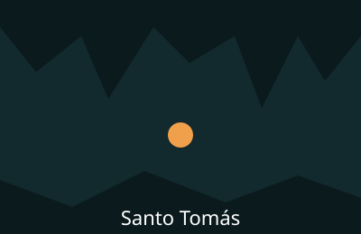
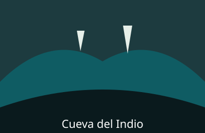
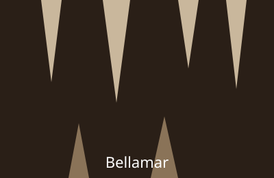

Cueva de Santo Tomás
Un enorme sistema de galerías en Pinar del Río, ideal para quienes ya tienen algo de experiencia.

Un enorme sistema de galerías en Pinar del Río, ideal para quienes ya tienen algo de experiencia.

Recorrido suave con tramo en río subterráneo. Perfecta para principiantes.

Formaciones de cristal y calcita en Matanzas, con visita guiada y fotografía.
| Expedición | Dificultad | Duración | Equipo |
|---|---|---|---|
| Santo Tomás | Alta | 6 horas | Casco, linterna, botas |
| Cueva del Indio | Baja | 2 horas | Casco y calzado cerrado |
| Bellamar | Media | 3 horas | Casco y linterna |